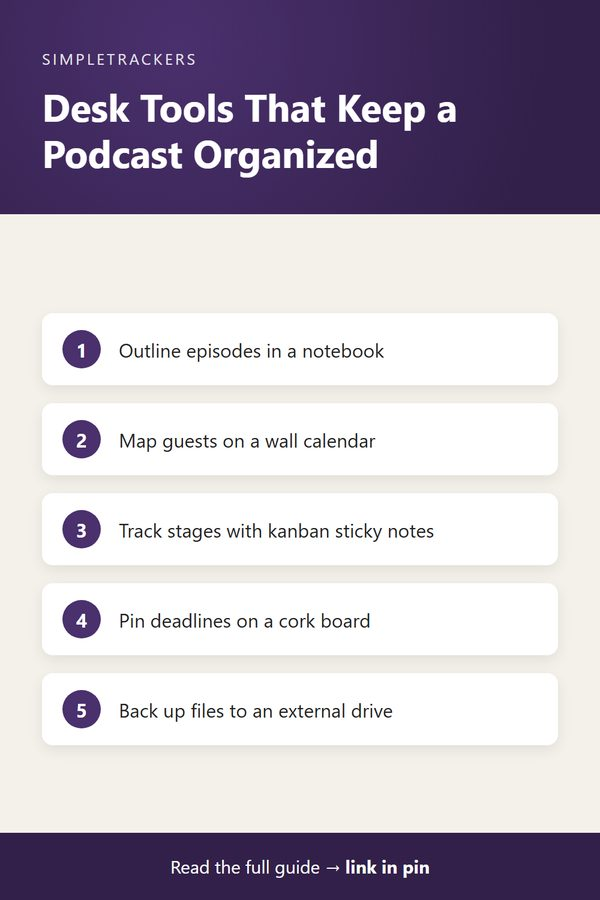

<!doctype html>
<html lang="en">
<head>
<script async src="https://pagead2.googlesyndication.com/pagead/js/adsbygoogle.js?client=ca-pub-7383810158576704" crossorigin="anonymous"></script>
<meta charset="utf-8">
<title>Podcast Production Essentials: Tools That Keep Your Operation Organized</title>
<meta name="viewport" content="width=device-width, initial-scale=1">
<meta name="description" content="Tools and workspace essentials that keep a podcast operation organized, from planning and scheduling to managing episodes and sponsors.">
<link rel="canonical" href="https://ghengoy.github.io/podcast-producer-tracker/podcast-production-essentials.html">
<meta property="og:type" content="article">
<meta property="og:title" content="Podcast Production Essentials: Tools That Keep Your Operation Organized">
<meta property="og:description" content="Tools and workspace essentials that keep a podcast operation organized, from planning and scheduling to managing episodes and sponsors.">
<meta property="og:url" content="https://ghengoy.github.io/podcast-producer-tracker/podcast-production-essentials.html">
<meta property="og:image" content="https://ghengoy.github.io/podcast-producer-tracker/images/hero/podcast-production-essentials.jpg">
<meta name="p:domain_verify" content="ed2ca7fb71cecfffeba5d895002ee1d1"/>
<script data-goatcounter="https://ghengoy.goatcounter.com/count" async src="//gc.zgo.at/count.js"></script>
<style>
  :root { --accent: #4A306D; --accent-dark: #32204A; --tint: #F1ECF7; --ink: #1f2328; --muted: #5d6470;
          --line: #e4e1da; --paper: #fbfaf7; --card: #ffffff; }
  * { box-sizing: border-box; }
  body { margin: 0; background: var(--paper); color: var(--ink); font-family: -apple-system, BlinkMacSystemFont, "Segoe UI", Roboto, "Helvetica Neue", Arial, sans-serif;
         font-size: 18px; line-height: 1.75; -webkit-font-smoothing: antialiased; }
  a { color: var(--accent); text-underline-offset: 3px; }
  a:hover { color: var(--accent-dark); }
  img { max-width: 100%; height: auto; }
  .site-header { background: var(--card); border-bottom: 1px solid var(--line); }
  .site-header .inner { max-width: 760px; margin: 0 auto; padding: 14px 20px; display: flex; align-items: center; justify-content: space-between; gap: 16px; flex-wrap: wrap; }
  .brand { font-weight: 700; color: var(--ink); text-decoration: none; font-size: 17px; display: flex; align-items: center; gap: 10px; }
  .brand-mark { width: 28px; height: 28px; border-radius: 8px; background: var(--accent); display: inline-block; position: relative; }
  .brand-mark::after { content: ""; position: absolute; left: 7px; top: 8px; width: 14px; height: 3px; background: #fff; border-radius: 2px;
                       box-shadow: 0 5px 0 #fff, 0 10px 0 rgba(255,255,255,.6); }
  .site-header nav { display: flex; gap: 18px; font-size: 15px; }
  .site-header nav a { color: var(--muted); text-decoration: none; }
  .site-header nav a:hover { color: var(--accent); }
  main { max-width: 760px; margin: 0 auto; padding: 32px 20px 56px; }
  article > h1, main > h1 { font-size: clamp(30px, 5vw, 42px); line-height: 1.2; letter-spacing: -0.02em; margin: 8px 0 12px; }
  h2 { font-size: 27px; line-height: 1.3; letter-spacing: -0.01em; margin: 52px 0 14px; padding-top: 6px; scroll-margin-top: 16px; }
  h3 { font-size: 21px; line-height: 1.35; margin: 32px 0 8px; }
  p { margin: 0 0 20px; }
  ul, ol { padding-left: 1.3em; margin: 0 0 22px; }
  li { margin-bottom: 8px; }
  li::marker { color: var(--accent); }
  strong { font-weight: 650; }
  .pillar-link { font-size: 15px; margin: 0 0 4px; }
  .pillar-link a { text-decoration: none; }
  .post-meta { color: var(--muted); font-size: 15px; margin: 0 0 24px; }
  .post-hero { margin: 0 0 28px; }
  .post-hero img { width: 100%; aspect-ratio: 16 / 9; object-fit: cover; border-radius: 14px; display: block; background: var(--tint); }
  figcaption { font-size: 13px; color: var(--muted); margin-top: 8px; line-height: 1.5; }
  figcaption a { color: var(--muted); }
  .toc { background: var(--card); border: 1px solid var(--line); border-radius: 12px; padding: 18px 22px 8px; margin: 0 0 32px; font-size: 16px; }
  .toc-title { font-weight: 700; margin: 0 0 8px; font-size: 14px; letter-spacing: .06em; text-transform: uppercase; color: var(--muted); }
  .toc ol { margin: 0 0 10px; }
  .toc li { margin-bottom: 4px; }
  .toc a { text-decoration: none; }
  .key-takeaways, .callout { border-radius: 12px; padding: 20px 24px 6px; margin: 0 0 30px; }
  .key-takeaways { background: var(--tint); border-left: 5px solid var(--accent); }
  .key-takeaways ul { margin-bottom: 14px; }
  .box-title { font-weight: 700; margin: 0 0 8px; font-size: 14px; letter-spacing: .06em; text-transform: uppercase; color: var(--accent-dark); }
  .callout { background: var(--card); border: 1px solid var(--line); border-left: 5px solid var(--accent); }
  .callout.note { border-left-color: #b7791f; }
  .callout.note .box-title { color: #8a5a12; }
  .steps { list-style: none; counter-reset: step; padding-left: 0; }
  .steps > li { counter-increment: step; position: relative; padding-left: 52px; margin-bottom: 18px; }
  .steps > li::before { content: counter(step); position: absolute; left: 0; top: 0; width: 34px; height: 34px; border-radius: 50%;
                        background: var(--accent); color: #fff; font-weight: 700; font-size: 16px; display: flex; align-items: center; justify-content: center; }
  .table-wrap { overflow-x: auto; margin: 0 0 28px; border: 1px solid var(--line); border-radius: 12px; background: var(--card); }
  table { border-collapse: collapse; width: 100%; font-size: 16px; line-height: 1.5; }
  th, td { text-align: left; padding: 12px 16px; border-bottom: 1px solid var(--line); vertical-align: top; }
  th { background: var(--tint); color: var(--accent-dark); font-weight: 700; }
  tr:last-child td { border-bottom: 0; }
  .pin-figure { margin: 36px auto; max-width: 400px; text-align: center; }
  .pin-figure img { border-radius: 12px; box-shadow: 0 10px 30px rgba(0,0,0,.12); display: block; }
  blockquote { margin: 0 0 24px; padding: 4px 0 4px 20px; border-left: 3px solid var(--line); color: var(--muted); font-style: italic; }
  .post-cta { display: flex; gap: 24px; align-items: center; background: var(--card); border: 1px solid var(--line); border-top: 5px solid var(--accent);
              border-radius: 14px; padding: 24px; margin: 48px 0 8px; }
  .post-cta img { width: 150px; border-radius: 10px; flex-shrink: 0; }
  .post-cta h3 { margin: 2px 0 6px; }
  .post-cta p { margin-bottom: 12px; font-size: 16px; }
  .cta-kicker { font-size: 13px !important; letter-spacing: .06em; text-transform: uppercase; color: var(--muted); margin: 0 !important; }
  .buy-button { display: inline-block; background: var(--accent); color: #fff !important; padding: 12px 22px; border-radius: 10px; text-decoration: none; font-weight: 700; font-size: 16px; }
  .buy-button:hover { background: var(--accent-dark); }
  .product-box { background: var(--card); border: 1px solid var(--line); border-radius: 14px; padding: 24px; margin: 24px 0 36px; display: grid; grid-template-columns: 200px 1fr; gap: 0 24px; align-items: center; }
  .product-box img { width: 200px; border-radius: 10px; grid-row: span 3; }
  .product-box h3 { margin: 0 0 6px; }
  .product-box p { margin-bottom: 12px; font-size: 16px; }
  .product-grid { display: grid; grid-template-columns: repeat(auto-fill, minmax(160px, 1fr)); gap: 16px; margin: 12px 0 36px; }
  .product-card { display: flex; flex-direction: column; gap: 4px; background: var(--card); border: 1px solid var(--line); border-radius: 12px; padding: 12px; color: var(--ink); text-decoration: none; font-size: 15px; line-height: 1.4; }
  .product-card:hover { border-color: var(--accent); }
  .product-card img { width: 100%; border-radius: 8px; margin-bottom: 4px; }
  .product-card span { color: var(--muted); }
  .product-card .price { color: var(--accent); font-weight: 700; }
  .post-list { list-style: none; padding: 0; display: grid; gap: 16px; }
  .post-list li { margin: 0; }
  .post-card { display: flex; gap: 18px; background: var(--card); border: 1px solid var(--line); border-radius: 14px; overflow: hidden; color: var(--ink); text-decoration: none; }
  .post-card:hover { border-color: var(--accent); }
  .post-card img { width: 200px; object-fit: cover; flex-shrink: 0; background: var(--tint); }
  .post-card-text { display: flex; flex-direction: column; gap: 6px; padding: 16px 18px 16px 0; }
  .post-card-text strong { font-size: 19px; line-height: 1.35; }
  .post-card-desc { color: var(--muted); font-size: 15px; line-height: 1.55; }
  .post-card-date { color: var(--muted); font-size: 13px; }
  .site-footer { border-top: 1px solid var(--line); background: var(--card); color: var(--muted); font-size: 15px; }
  .site-footer .inner { max-width: 760px; margin: 0 auto; padding: 28px 20px; display: flex; justify-content: space-between; gap: 16px; flex-wrap: wrap; }
  .site-footer p { margin: 0; }
  @media (max-width: 600px) {
    body { font-size: 17px; }
    h2 { font-size: 23px; margin-top: 40px; }
    .post-cta, .post-card { flex-direction: column; }
    .post-cta img { width: 120px; }
    .post-card img { width: 100%; aspect-ratio: 16 / 9; }
    .post-card-text { padding: 0 16p
<header class="site-header"><div class="inner">
<a class="brand" href="index.html"><span class="brand-mark" aria-hidden="true"></span>Podcast Production</a>
<nav><a href="index.html">Guides</a><a href="pillar-guide.html">Start here</a></nav>
</div></header>
<main>
<article>
<h1>Podcast Production Essentials: Tools That Keep Your Operation Organized</h1>
<p class="post-meta"><time datetime="2026-08-26">August 26, 2026</time> &middot; 6 min read</p>
<figure class="post-hero"><figcaption>Photo: <a href="https://www.flickr.com/photos/156466858@N02/32861871107" rel="nofollow">bradjavernick</a>, <a href="https://creativecommons.org/licenses/by/2.0/" rel="license nofollow">CC BY 2.0</a></figcaption></figure>
<nav class="toc" aria-label="Contents"><p class="toc-title">In this guide</p>
<ol>
<li><a href="#episode-planning-notebooks">Episode Planning Notebooks</a></li>
<li><a href="#guest-booking-whiteboards">Guest Booking Whiteboards</a></li>
<li><a href="#sponsorship-contract-binders">Sponsorship Contract Binders</a></li>
<li><a href="#desktop-file-organizers">Desktop File Organizers</a></li>
<li><a href="#kanban-sticky-note-sets">Kanban Sticky Note Sets</a></li>
<li><a href="#cork-bulletin-boards">Cork Bulletin Boards</a></li>
<li><a href="#business-card-holders">Business Card Holders</a></li>
<li><a href="#external-backup-drives">External Backup Drives</a></li>
<li><a href="#ergonomic-office-chairs">Ergonomic Office Chairs</a></li>
<li><a href="#standing-desk-converters">Standing Desk Converters</a></li>
<li><a href="#pomodoro-desk-timers">Pomodoro Desk Timers</a></li>
<li><a href="#annual-content-planning-journals">Annual Content Planning Journals</a></li>
<li><a href="#thank-you-greeting-card-sets">Thank You Greeting Card Sets</a></li>
<li><a href="#label-makers">Label Makers</a></li>
</ol></nav>
<p class="affiliate-disclosure"><em>As an Amazon Associate I earn from qualifying purchases.</em></p>

<div class="key-takeaways">
<p class="box-title">Key takeaways</p>
<ul>
<li><strong>Planning:</strong> a planning notebook and an annual journal keep episode ideas and the year's calendar in one place.</li>
<li><strong>Visibility:</strong> a wall calendar, kanban sticky notes and a cork board put guests, stages and deadlines where you see them daily.</li>
<li><strong>Paperwork:</strong> binders, a desk file organizer and a label maker keep sponsor agreements and contracts findable in seconds.</li>
<li><strong>Protection and comfort:</strong> external backups protect irreplaceable files; a good chair, standing converter and timer keep long admin sessions sustainable.</li>
</ul>
</div>

<p>Running a podcast involves much more than hitting record. Managing episodes, coordinating guests, tracking sponsorships, and staying organized require the right tools and workspace setup.</p>

<p>Just as your tracker keeps episode data in one place, the right operational tools and workspace items keep production management streamlined. When your desk is organized and your planning systems are in place, you can focus on creating better content instead of hunting for information.</p>

<div class="table-wrap">
<table>
<thead><tr><th>Tool</th><th>The job it does</th></tr></thead>
<tbody>
<tr><td>Episode planning notebook</td><td>Outline episodes, guest notes and talking points</td></tr>
<tr><td>Dry-erase wall calendar</td><td>See guests, recordings and release dates at a glance</td></tr>
<tr><td>Contract binder</td><td>Keep sponsorship agreements and deal terms together</td></tr>
<tr><td>Desktop file organizer</td><td>Keep active paperwork sorted within arm's reach</td></tr>
<tr><td>Kanban sticky notes</td><td>Move episodes visually through production stages</td></tr>
<tr><td>Cork bulletin board</td><td>Pin deadlines and guest info where you see them daily</td></tr>
<tr><td>Business card holder</td><td>Keep sponsor, guest and industry contacts findable</td></tr>
<tr><td>External backup drive</td><td>Redundant backups of production files</td></tr>
<tr><td>Ergonomic chair</td><td>Comfort and focus through long desk sessions</td></tr>
<tr><td>Standing desk converter</td><td>Alternate between sitting and standing</td></tr>
<tr><td>Pomodoro timer</td><td>Focused work blocks with breaks</td></tr>
<tr><td>Annual planning journal</td><td>Map the year's content and sponsorship calendar</td></tr>
<tr><td>Thank-you card set</td><td>Personal notes to guests, sponsors and partners</td></tr>
<tr><td>Label maker</td><td>Clear labels on files, boxes and equipment</td></tr>
</tbody>
</table>
</div>

<h2 id="episode-planning-notebooks">Episode Planning Notebooks</h2>

<p>A dedicated planning notebook keeps episode ideas, guest notes, and talking points in one place instead of scattered across sticky notes and phone memos.</p>

<p>Many producers find that outlining an episode by hand, away from a screen, sharpens the structure before any production work begins. This tangible approach helps clarify your episode flow and key discussion points. <a href="https://www.amazon.com/s?k=podcast+episode+planner+notebook&tag=multicattrack-20">Browse podcast episode planner notebooks on Amazon</a>.</p>

<h2 id="guest-booking-whiteboards">Guest Booking Whiteboards</h2>

<p>A dry-erase wall calendar becomes your visual guest-booking hub. With upcoming guests, recording sessions, and release dates all visible on one calendar, you spot conflicts before they become problems.</p>

<ul>
<li><strong>For your team:</strong> see at a moment whether a recording slot is available.</li>
<li><strong>For guests:</strong> reference the visible schedule when you're discussing timing.</li>
</ul>

<p><a href="https://www.amazon.com/s?k=dry+erase+wall+calendar+planner&tag=multicattrack-20">Browse dry-erase wall calendars on Amazon</a>.</p>

<h2 id="sponsorship-contract-binders">Sponsorship Contract Binders</h2>

<p>Keeping all sponsorship agreements, contracts, and deal terms in a dedicated binder prevents disputes and lets you quickly reference what was promised.</p>

<p>When a sponsor asks about previous deals or terms, you need those documents immediately. A well-organized binder lets you pull together all agreements in seconds, rather than digging through email archives. <a href="https://www.amazon.com/s?k=document+binder+organizer&tag=multicattrack-20">Browse document binders and organizers on Amazon</a>.</p>

<h2 id="desktop-file-organizers">Desktop File Organizers</h2>

<p>A structured desk file organizer keeps invoices, contracts, sponsor agreements, and administrative paperwork sorted by category and within arm's reach.</p>

<p>Instead of stacking important documents precariously or filing them away where you'll forget them, a desk organizer keeps active paperwork visible and actionable. <a href="https://www.amazon.com/s?k=desktop+file+organizer&tag=multicattrack-20">Browse desktop file organizers on Amazon</a>.</p>

<h2 id="kanban-sticky-note-sets">Kanban Sticky Note Sets</h2>

<p>Sticky notes organized as a kanban board let you track each episode through its production phases. A typical set of columns:</p>

<ol class="steps">
<li>Planning</li>
<li>Recording scheduled</li>
<li>Recorded</li>
<li>Edited</li>
<li>Ready to publish</li>
<li>Published</li>
</ol>

<p>The visual board helps you and your team instantly see which episodes are where in the pipeline. Move notes across columns as episodes progress, and everyone gets a clear picture of production momentum. <a href="https://www.amazon.com/s?k=sticky+notes+kanban+board&tag=multicattrack-20">Browse kanban sticky note sets on Amazon</a>.</p>

<h2 id="cork-bulletin-boards">Cork Bulletin Boards</h2>

<p>A cork board mounted near your workspace becomes a quick reference center. Pin up the things you need to see daily:</p>

<ul>
<li>Current episode notes</li>
<li>Sponsor details</li>
<li>Upcoming guest information and contact info</li>
<li>Production deadlines and promotional schedules</li>
</ul>

<p>This passive visibility keeps important items from slipping through the cracks. <a href="https://www.amazon.com/s?k=cork+bulletin+board&tag=multicattrack-20">Browse cork bulletin boards on Amazon</a>.</p>

<figure class="pin-figure">

<figcaption>Save this summary to Pinterest for later.</figcaption>
</figure>

<h2 id="business-card-holders">Business Card Holders</h2>

<p>Keeping business cards from sponsors, guests, and industry contacts organized means you can quickly find contact information when you need it.</p>

<p>A dedicated card holder prevents cards from getting lost in desk clutter. It also looks professional when you're exchanging contact information with potential sponsors or guests at industry events. <a href="https://www.amazon.com/s?k=business+card+holder&tag=multicattrack-20">Browse business card holders on Amazon</a>.</p>

<h2 id="external-backup-drives">External Backup Drives</h2>

<p>Regular external drive backups are critical for operational continuity. Your episode notes, production templates, sponsor agreements, and guest information are irreplaceable production assets.</p>

<div class="callout note">
<p class="box-title">Don't rely on one computer</p>
<p>These files need redundant backups beyond your computer's storage. An organized external drive system means you can recover any file if your primary computer fails.</p>
</div>

<p><a href="https://www.amazon.com/s?k=external+ssd+backup+drive&tag=multicattrack-20">Browse external backup drives on Amazon</a>.</p>

<h2 id="ergonomic-office-chairs">Ergonomic Office Chairs</h2>

<p>You spend hours at your desk managing production details. An ergonomic chair supports your back, reduces fatigue, and helps you focus during long planning or administrative sessions.</p>

<p>Proper seating makes extended coordination calls with guests or sponsors more comfortable and keeps you alert during detailed editorial work. Good ergonomics also reduce strain injuries that can interrupt your workflow. <a href="https://www.amazon.com/s?k=ergonomic+office+chair&tag=multicattrack-20">Browse ergonomic office chairs on Amazon</a>.</p>

<h2 id="standing-desk-converters">Standing Desk Converters</h2>

<p>A standing desk converter lets you alternate between sitting and standing while you handle emails, update your tracker, or plan episodes. It reduces the health impacts of prolonged sitting.</p>

<p>The flexibility to change positions keeps your energy and focus steady during long administrative sessions. Standing for part of the day also reduces fatigue and improves circulation. <a href="https://www.amazon.com/s?k=standing+desk+converter&tag=multicattrack-20">Browse standing desk converters on Amazon</a>.</p>

<h2 id="pomodoro-desk-timers">Pomodoro Desk Timers</h2>

<p>A physical pomodoro timer keeps you accountable to focused work sessions while handling production tasks like email, planning, or tracker updates.</p>

<div class="callout tip">
<p class="box-title">Why timed blocks help</p>
<p>Breaking your workday into timed intervals helps prevent the mental fatigue of managing podcast operations continuously. The timer reminds you to step away, stretch, and reset between focused blocks.</p>
</div>

<p><a href="https://www.amazon.com/s?k=pomodoro+desk+timer&tag=multicattrack-20">Browse pomodoro timers on Amazon</a>.</p>

<h2 id="annual-content-planning-journals">Annual Content Planning Journals</h2>

<p>A dedicated annual planner lets you map out your podcast content calendar, sponsorship roadmap, and production schedule across the full year.</p>

<p>This long-term planning prevents last-minute scrambles and helps you coordinate multiple episodes or shows at once. The journal format also encourages reflection on what worked and planning for what's next. <a href="https://www.amazon.com/s?k=annual+planner+journal&tag=multicattrack-20">Browse annual planning journals on Amazon</a>.</p>

<h2 id="thank-you-greeting-card-sets">Thank You Greeting Card Sets</h2>

<p>Sending personalized thank-you cards to guests, sponsors, and partners creates a memorable touch that builds lasting relationships in your podcasting community.</p>

<p>A boxed set of quality cards means you're always ready to send a note of appreciation without scrambling to find one. This personal gesture stands out in an age of email and builds goodwill for future collaborations. <a href="https://www.amazon.com/s?k=thank+you+greeting+cards+set&tag=multicattrack-20">Browse thank you greeting card sets on Amazon</a>.</p>

<h2 id="label-makers">Label Makers</h2>

<p>A label maker helps you organize physical files, storage boxes, equipment, and workspace areas with clear, professional labels.</p>

<p>Organized storage makes it quick to locate sponsor contracts, guest folders, or production templates when you need them. Crisp printed labels give your workspace a professional look and reduce the friction of staying organized. <a href="https://www.amazon.com/s?k=label+maker&tag=multicattrack-20">Browse label makers on Amazon</a>.</p>

<p>Whichever of these you add to your workflow, the goal is the same one your tracker already serves: less time hunting for information, more time producing episodes that ship on schedule. <a href="https://kimnet8.gumroad.com/l/eagpjf">Download the Podcast Producer & Episode Management Tracker</a> to keep the operational side of your show as organized as your workspace.</p>

<p class="pillar-link"><a href="pillar-guide.html">&larr; Back to the Complete Podcast Production Guide</a></p>

<aside class="post-cta">

<div><p class="cta-kicker">Make it easy to keep track</p>
<h3>Podcast Producer & Episode Management Tracker</h3>
<p>A ready-to-use spreadsheet and guide for tracking episodes from idea to publish.</p>
<p><a class="buy-button" href="https://kimnet8.gumroad.com/l/eagpjf">Get the Tracker &middot; $19.99</a></p></div>
</aside>

</article>
</main>
<footer class="site-footer"><div class="inner">
<p><a href="https://podcast-producer-tracker.beehiiv.com/subscribe">Get an email when new guides go live</a></p>
<p>&copy; 2026 <a href="/">SimpleTrackers</a> &middot; <a href="/about.html">About</a> &middot; <a href="/contact.html">Contact</a> &middot; <a href="/privacy.html">Privacy</a></p>
</div></footer>tps://podcast-producer-tracker.beehiiv.com/subscribe">Get an email when new guides go live</a></p>
<p>&copy; 2026 SimpleTrackers</p>
</div></footer>
</body>
</html>
